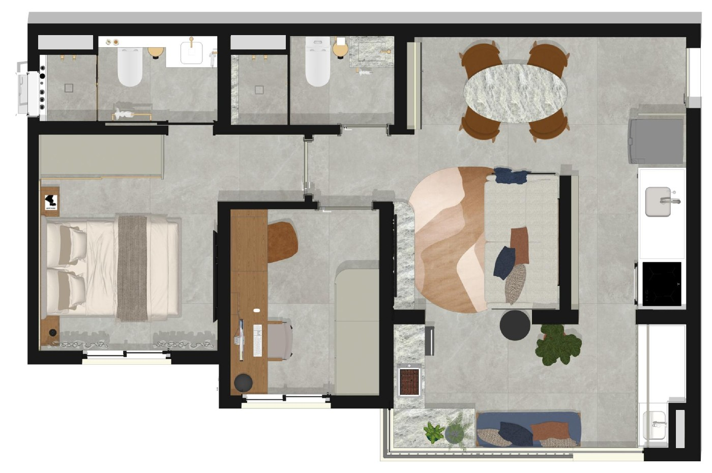
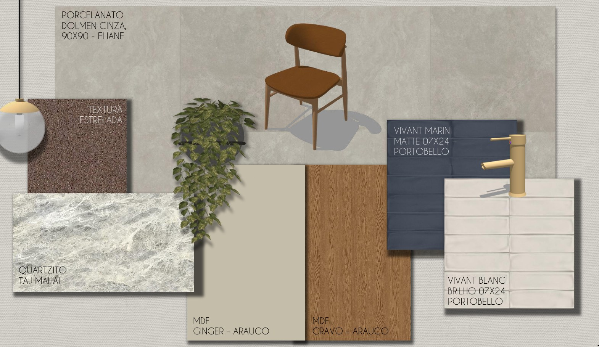

Terracota, azul marinho e madeira: três cores, uma conversa. Nesta reforma de 40 m², a cor entra em pequenos gestos, na cadeira, na almofada, no revestimento do banho, e deixa a base em cinza e areia respirar.

Toque num ambiente para ver as imagensPasse o mouse sobre um ambiente
Materiais
A base é calma: porcelanato cinza, madeira de veio marcado e pedra clara de desenho livre. Sobre ela, o azul marinho do banho e o terracota das cadeiras acendem o olhar sem pesar.

Lista de materiais
Porcelanato Dolmen Cinza 90x90Eliane · piso
Quartzito Taj MahalBancadas e detalhes
Textura EstreladaRevestimento do banho
MDF GingerArauco · marcenaria clara
MDF CravoArauco · marcenaria em madeira
Vivant Marin Matte 7x24Portobello · banho do casal
Vivant Blanc Brilho 7x24Portobello · revestimento
Cor não é enfeite: é a forma de dar à casa a sua voz.